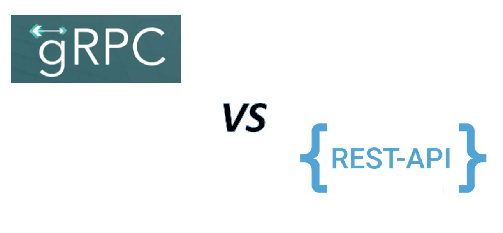

Blog
-
Microservices Evolution Starts with Monolith: Here's Why
Why you shouldn't start a new project with microservices, even if you're sure your application will be big enough to make it worthwhile.
-

Introducing OverflowAI by Stack Overflow
Introducing OverflowAI: Stack Overflow's Leap into Generative AI.
-

Rethinking Unit Testing: An Effective Approach for Software Development
The pitfalls of excessive reliance on unit testing and shedding light on a more practical and efficient approach to testing software.
-
10 Useful extension methods in LINQ
10 useful custom extension methods in LINQ that can help you write more concise and expressive code.
-
'Clean' Code, Horrible Performance
Clean Code is important, but it's not the only thing that matters. When writing code, it's important to strike a balance.
-
How ChatGPT Can Help with Creating a Swagger Script for an API Endpoint
How ChatGPT, a powerful language model, can assist in creating a Swagger script for an API endpoint.
-

Microsoft Build 2023: The Rise of No-Code Developers: Anyone Can Code Now!
With AI-powered tools and prompt engineering techniques, Microsoft aims to make coding accessible to everyone.
-

Json Crack: Seamlessly Visualize Your JSON Data Instantly Into Graphs
An innovative, open source JSON visualization app.Brings data to life through captivating graphs.
-
Agile: A Tool, not a Goal
Essence of agility and illustrate its importance with a real-life example from the perspective of a software engineer.
-
Why It's Never Too Late to Become a Software Engineer
Why it's never too late to become a software engineer and how you can make a successful transition into this exciting field.
-

5 Techniques to Optimize Database Queries in .NET
Several techniques and best practices that can help developers optimize database queries in�.NET
-
How ChatGPT Can Help You in Generating Unit Test Scenarios
ChatGPT can generate a wide range of test scenarios, helping you achieve better test coverage and uncover potential issues in your code.
-
Securing Your .NET Core Application with Redis Distributed Caching
How to use Redis distributed caching to improve the security of a�.NET Core application by implementing rate limiting.
-
How to Boost Your API Performance
Exploring some of the common reasons for slow APIs and provide solutions/tips for each.
-

Why Cache Invalidation is Hard and How to Solve It
What cache invalidation is, why it is hard with real-world examples and some techniques for dealing with it.
-
Real-time Leaderboards and Counters with Redis
Data structures and commands provided by Redis, and examples of how they can be used to implement real-time leaderboards.
-
Github Copilot: The Good, the Bad, and the Controversial
Copilot has the potential to revolutionize the way developers work and it comes with both potential benefits and concerns.
-

Say Goodbye to the Command Line: GIT Extensions Makes Git Easier Than Ever
GIT Extensions makes it easy for developers to use Git without needing to use the command-line interface.
-
Overview of Microservices in .NET
.NET is a versatile platform that provides a wide range of tools and frameworks to help developers create, deploy, and manage microservices
-
Dapper vs EF Core: Which ORM Framework Should You Choose for Your .NET Application
Detailed comparison of Dapper-EF Core and offer insights on when to choose one over the other.
-

Mastering GitHub: How to Manage Large Repositories like a Pro
How to manage large repositories on Github, including how to split them, use submodules, optimize performance, and avoid common pitfalls
-

Making Your API Secure in .NET: Tips and Tricks to Keep Hackers at Bay
Deep dive into more specific tips and tricks for making your API secure in .NET.
-

Why Premature Optimization is the Enemy of Good Software Development
Premature optimization can lead to overly complex code that is difficult to read, understand, and maintain. It's important to avoid from it.
-
How Pull Request Templates Can Improve Your GitHub Workflow
Using Pull Request templates in GitHub to improve the PR writing process and streamline the review process.
-

Continuous Learning: Overcoming Challenges for a Thriving Career as a Software Developer
Despite the challenges, it is important for software developers to embrace continuous learning and to make it a priority in their careers.
-

The Evolution of Cloud Computing in Software Development
Cloud computing has become an essential part of modern software development, providing businesses and developers with a range of benefits. The cloud has undergone a rapid transformation in recent years, and its impact on software development has been significant.
-

The Surprising Similarities between Playing Chess and Developing Software
How skills developed in chess can be applied to improve software development skills and vice versa.
-

How to Build Secure Applications: A Guide to OWASP Best Practices
10 OWASP best practices that can help you build and maintain secure web applications.
-

From Problems to Progress: A 5-Step Guide to Approaching Problems as a Software Developer
As a software developer, the ability to approach problems in a structured manner is critical to delivering high-quality solutions.
-
10 Useful extension methods in C#
10 useful extension methods that can help you write more efficient and maintainable code in C#.
-

The Top 10 Mistakes Developers Make and How to Avoid Them
As a software developer, it�s easy to make mistakes. In this article, we will discuss the top 10 mistakes that developers make and how to avoid them.
-
Lessons Learned: My Journey to 5000 Reputations on Stack Overflow
I have been trying to be active in Stack Overflow for almost 3 years as an "answerer" and I just reached 5000 reputations last week which was my goal.
-

“How To Talk To Anyone” from a Developer’s Eye
Enter "How to Talk to Anyone" by Leil Lowndes, a book that teaches you how to communicate effectively in any social situation.
-
 gRPC vs REST: Simple comparison
A very basic comparison/differences between gRPC and REST